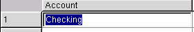
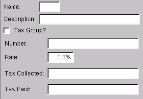

| Table of Contents | Up: Quasar Commands | Previous: Entry Attributes | Next: Special Attributes |
The tab key is a very special key within Quasar. If used correctly it
can save literally thousands of keystrokes. Study this section
carefully and practice the use of the tab key.
The most common function of the tab key is to tab between
attributes within a data entry window. As long as no data is entered
or selected within an attribute, pressing the tab key will move the
cursor to the next attribute. It is when editing text that the tab key
is truly powerful.
The following example shows how to use the tab
key to automatically fill in data. In a journal entry we have entered
the letter "c" and have pressed the tab key. Quasar finds only an upper case "C" and responds by changing the
"c" to an upper case "C". Then Quasar beeps to signify that there is more than one
possible choice.
At the beep you can enter additional data to make your entry more unique, or you can press the tab key for a second time. If the tab key is pressed for a second time Quasar displays the lookup window. See help on "Lookup Window". If the data entered is unique and the tab key is pressed, Quasar will complete the data entry and move to the next attribute
Pressing the shift and tab key simultaneously produces exactly the same results as using the tab key, except the cursor tabs backwards through the window.
The lookup window may be accessed through any of the data entry screens where the little blue lookup triangle is displayed. Involk the lookup by pressing "F9" or by using the right click of your mouse and clicking on lookup.
Below is an example of the lookup window when involked from an account field.
As you type in alpha-numeric data Quasar searches its database and high-lights the closest selection.
The new function allows you to create a new entry immediately. For example, if the lookup window was involked from an account entry field the new function takes you to the account master window and allows the immediate creation of a new account.
Windows in Quasar that require the ability to enter multiple data lines utilize data entry tables. Following is an example of the data entry table in the journal entry window.
The line number on the right of the table indicates the number of lines in the table.
The scroll bar on the right of the table can be used to scroll up and down through the table.
The table is divided into columns and rows. Each column has a header at the top to identify the data. Data is entered in the rows.
Rows may be deleted or inserted by using the right button of a mouse to click on the row number. A small window will display providing a choice of delete or insert. Selecting delete will delete the entire current row. Selecting insert will insert a blank row directly above the current row.
Pressing the space bar selects the data high-lighted by the cursor. For example if the cursor is on the cancel button, pressing the space bar will select cancel and the transaction will be canceled.
If in the process of entering text pressing the backspace key
deletes the last
character entered. If you have just moved to an attribute that
contains existing data the data will be high-lighted. Pressing
the backspace key at this time will cause the attribute to be
cleared.

Pressing the alt key in combination with a letter will cause the
cursor to move to the attribute name that has the letter underlined. In
the example below the cursor would move to the "Rate" attribute if
alt/r was pressed.

| Table of Contents | Up: Quasar Commands | Previous: Entry Attributes | Next: Special Attributes |